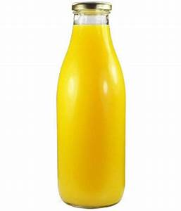
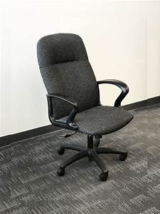

Both Google Lens & MobileNet identified the image as a camera but Google Lens was more accurate as it identified the brand correctly as well.
Test Image -
Output on GOOGLE LENS -
Bed, Bedroom
Output on Mobilenet Model -
Quilt, Comforter, Puff
Result -
Google Lens is more accurate as it identified the whole image (Bed, Bedroom), whereas MobileNet identified only elements of the image (Quilt, Comforter, Puff).
Test Image - 
Output on GOOGLE LENS -
Orange Juice
Output on Mobilenet Model -
Vaccum Cleaner
Result -
Google Lens is correct, whereas MobileNet's prediction is incorrect.
Test Image -
Output on GOOGLE LENS -
Surface Laptop
Output on Mobilenet Model -
Television
Result -
Google Lens has correctly identified the image, whereas MobileNet has identified it as a similar looking technology (both image and prediction were technology).
Test Image - 
Output on GOOGLE LENS -
Office Chair
Output on Mobilenet Model -
Microphone, Mike
Result -
Google Lens has identified the image correctly and MobileNet has identified it incorrectly.
I have tested 5 images in 2 different image identification models - Google Lens & MobileNet.
Google Lens has predicted all of the images accurately and MobileNet was less accurate with 2 vaguely correct predictions. So according to my case study Google Lens is more accurate.